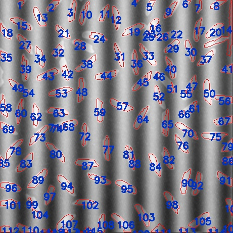
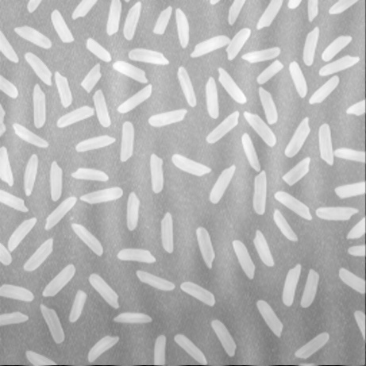
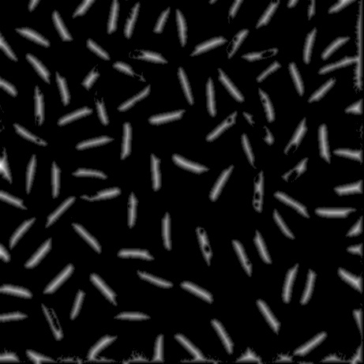

Input:
Output: Has {{count}} objects in this image

{% if choice == 1 %}
image = cv2.medianBlur(image, 3, None)
image = cv2.cvtColor(image, cv2.COLOR_BGR2GRAY)
thresh = cv2.adaptiveThreshold(image, 255.0,cv2.ADAPTIVE_THRESH_MEAN_C, cv2.THRESH_BINARY, 51, -20.0)
{% endif %}
{% if choice == 2 %}
image = cv2.medianBlur(image, 3, None)
image = cv2.cvtColor(image, cv2.COLOR_BGR2GRAY)
dft = cv2.dft(np.float32(image), flags=cv2.DFT_COMPLEX_OUTPUT)
dft_shift = np.fft.fftshift(dft)
dft_shift[227:233, 219:225] = 255
dft_shift[227:233, 236:242] = 255
f_ishift = np.fft.ifftshift(dft_shift)
img_back = cv2.idft(f_ishift)
img_back = cv2.magnitude(img_back[:, :, 0], img_back[:, :, 1])
img = cv2.normalize(img_back, None, alpha=0, beta=255, norm_type=cv2.NORM_MINMAX, dtype=cv2.CV_8U)
imageOut = img
imgSmooth = img.copy()
lookUpTable = np.empty((1, 256), np.uint8)
for i in range(256):
lookUpTable[0, i] = np.clip(pow(i / 255.0, 5) * 255.0, 0, 255)
res = cv2.LUT(img, lookUpTable)
kernel = np.ones((9, 9), np.uint8)
res = cv2.morphologyEx(res, cv2.MORPH_OPEN, kernel)
lookUpTable = np.empty((1, 256), np.uint8)
for i in range(256):
lookUpTable[0, i] = np.clip(pow(i / 255.0, 0.7) * 255.0, 0, 255)
res = cv2.LUT(res, lookUpTable)
image = cv2.adaptiveThreshold(res, 255.0, cv2.ADAPTIVE_THRESH_MEAN_C, cv2.THRESH_BINARY, 71, -25)
{% endif %}
{% if choice == 3 %}
lookUpTable = np.empty((1, 256), np.uint8)
for i in range(256):
lookUpTable[0, i] = np.clip(pow(i / 255.0, 0.01) * 255.0, 0, 255)
image = cv2.LUT(image, lookUpTable)
image = cv2.medianBlur(image, 3, None)
image = cv2.cvtColor(image, cv2.COLOR_BGR2GRAY)
thresh = cv2.adaptiveThreshold(image, 255.0,cv2.ADAPTIVE_THRESH_MEAN_C, cv2.THRESH_BINARY, 51, -20.0)
{% endif %}
{% if choice == 4 %}
image = cv2.medianBlur(image, 3, None)
image = cv2.cvtColor(image, cv2.COLOR_BGR2GRAY)
lookUpTable = np.empty((1, 256), np.uint8)
for i in range(256):
lookUpTable[0, i] = np.clip(pow(i / 255.0, 2.5) * 255.0, 0, 255)
img = cv2.LUT(image, lookUpTable)
thresh = cv2.adaptiveThreshold(img, 255.0, cv2.ADAPTIVE_THRESH_MEAN_C, cv2.THRESH_BINARY_INV, 51, 6)
thresh = cv2.medianBlur(thresh, 5)
{% endif %}
Smooth:
Thresh:
{% if choice == 4 %}
kernel = np.ones((9, 9), np.uint8)
thresh = cv2.dilate(thresh, None, iterations=7)
kernel = np.ones((5, 5), np.uint8)
thresh = cv2.erode(thresh, kernel, iterations=2)
{% endif %}
kernel = np.ones((5, 5), np.uint8)
output_erosion = cv2.erode(thresh, kernel, iterations=1)
contours, _ = cv2.findContours(output_erosion, cv2.RETR_EXTERNAL, cv2.CHAIN_APPROX_SIMPLE)
image = imageOut
for (i, c) in enumerate(contours):
((x, y), r) = cv2.minEnclosingCircle(c)
cv2.drawContours(image, [c], -1, (0, 255, 0), 2)
cv2.putText(image, "{}".format(i + 1), (int(x) - 10, int(y) + 10),
cv2.FONT_HERSHEY_SIMPLEX, 0.6, (255, 0, 0), 2)
Erode:
Draw Contour: